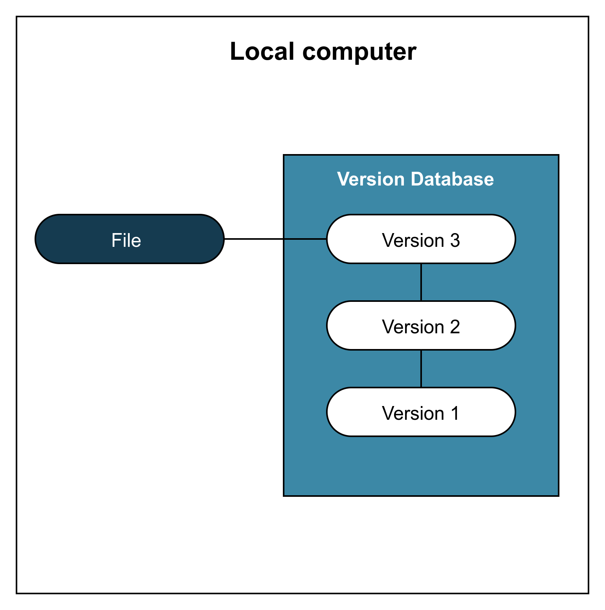
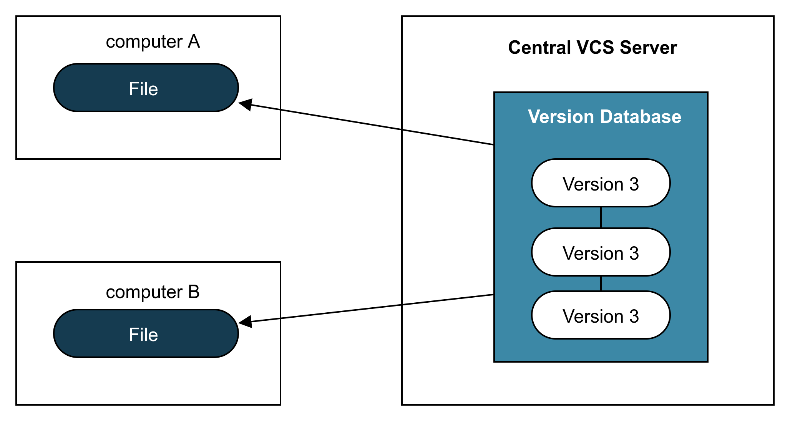
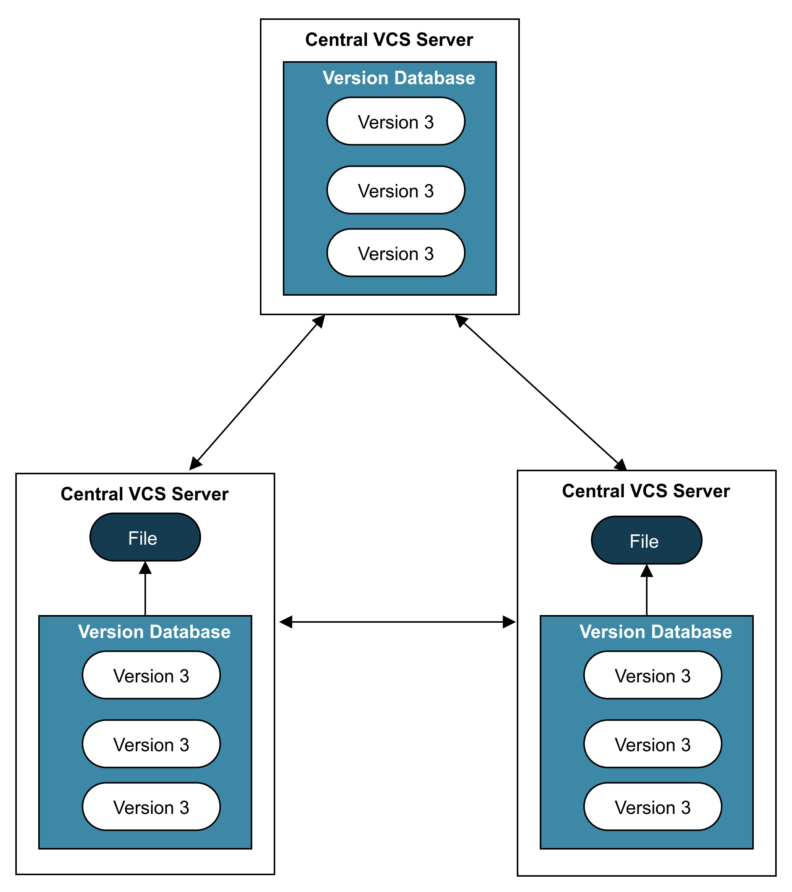

Git Tutorial
1. Définition
- What is "version control", and why should you care ? Version control is a system that records changes to a file or set of files over time so that you can recall specific versions later. Any type of files can be version controlled. In this tutorial, we will use software source code as the files beign version controlled.
- A VCS allows you to revert files to a previous state, the entire project to a previous state, compare changes over time, see who last modified something that might be causing a problem, who introduced an issue and when, and more. Using a VCS also generally means that if you screw things up orr lose files, you can easily recover. In addition yu get all this for very little overhead.
2. Types de systèmes de gestion de version
2.1 Local Version Control System
Local Version Control Systems, had a simple database that kept all changes to files under revision control. Exemple: RCS

2.2 Centralised Version Control System
Les systèmes de gestion de versions locaux, ne permettent pas de collaborer entre les développeurs d'un projet. Donc, il y a lieu de mettre en place un système de gestion de version qui répond au besoin de collaboration et de suivi du travail de chaque développeur. D'où la migration vers des systèmes de gestion centralisés. Ces systèmes possède un server central où les fichiers versionnés sont stockés. Chaque développeur peut faire une requête des fichiers du projet pour travailler localement. Exemple: Subversion, Perforce.

Les avantages de ce type de système par rapport aux precedents est le suivi du travail de chaque developpeur (qui a fait Quoi? Quand? Etc). Comme toute l'historique des versions est stockée sur le server (uniquement le server), il y a des risques tels que:
- Interruption de la collaboration lorsque le server tombe en panne
- Perte des données du server
- Perte de toute l'historique sur les versions du projet
Tous ces problèmes sont dus à la dépendance au server. Pour pallier cela, il faut des systèmes de gestion de version, où l'historique des versions n'est pas centralisé, donc elle doit être présente non seulement sur le server mais aussi au niveau de ses clients (dans notre cas les machines des développeurs qui participe à un projet). Ce type de systèmes sont appélés des systèmes de gestion distribués (ou centralisés).
2.3 Distributed Versions Control System
Dans les systèmes de gestion de version distribués, lors d'une requête au server, c'est une copie de toute l'historique des versions qui est transmise au client. Exemple : Git, Mercurial, Bazaar, Dars.

3. Présentation de Git
- Git est un systèmes de gestion de versions distribué, developpé par Linus Torvalds (Pour être plus précis la communauté de développement du Kernel Linux) en 2005.
- Git a été conçu pour répondre aux besoins suivant:
- Rapidité (speed)
- Simpe design
- Excellent Système de branching
- Completement distribué
- Capable de gérer de grands projets tels que Linux Kernel
- Git est un système de gestion de versions décentralisé. Votre copie de travail ainsi qu’une copie intégrale de l’historique complet du projet se trouvent sur votre machine, sur le serveur, et sur tous les autres ordinateurs hébergeant une copie du projet.
4. Installation et configuration
- Vérifier si Git est installer sur votre système
$ git --version - Installer Git sur Linux
$ sudo apt-get git - Pour configurer git on utilise la commande
git config. Trois portée pour ces configurations- Local : lorsqu'on veut configurer git pour seulement un repository spécifique on utilise la commande
git configsuivi de la configuration qu'on veut faire. (fichier de configuration disponible dans le fichier .git/config du repos) - Global : lorsqu'on veut faire une configuration pour tous les nos repos (niveau user), on utilise la commande
git config --globalsuivi de la configuration qu'on veut faire.(fichier de configuration disponible dans le fichier ~/.gitconfig ou ~/.config/git/config) - System : Pour configurer git au niveau système (pour tous les utilisateurs du système), on utilise
git config --systemsuivi de la configuration.(fichier de configuration disponible dans le fichier /etc/gitconfig)
- Local : lorsqu'on veut configurer git pour seulement un repository spécifique on utilise la commande
-
Git aura besoin de votre nom et adresse mail pour faire des commits:
$ git config --global user.name "votre_nom"$ git config --global user.email "votre_adresse_mail"
-
Quelques configurations :
- Choisir un éditeur par défaut:
git config --global core.editor editor_name
- Choisir un éditeur par défaut:
- Commande pour lister les configurations :
git config --list
4. Fonctionnement de Git
6. Pratique
Dans cette partie nous allons explorer git à l'aide d'un exemple.
6.1 Enoncé
- Deux développeurs Tom et Jerry decide de collaborer sur un projet informatique: mise en place d'une librairie proposant des fonctions destiner à la manipulation des chaines de caractères. Pour collaborer, ils vont utiliser l'outil Git.
- Nous allons simuler tous cela à l'aide de notre machine: tom et jerry seront des utilisateurs que nous allons créer. Et pour server nous allons créer un autre utilisateur gitServer, qui servira de server
6.2 Création des utilisateurs et configurations
6.2.1 Création de gitServer
- Création de l'utilisateur gitServer
$ sudo useradd -d /home/gitServer -m -s /bin/bash gitServer
$ passwd gitServer - Configurer Git
$ git config --global user.name "gitServer"
$ git config --global user.email "gitServer@gmail.com" - Créer un repertoire project.git:
$ mkdir project.git
$ cd project.git
$ git config --list
$ git --bare init
6.2.2 Création de l'utilisateur Tom
- Création de l'utilisateur Tom:
$ sudo useradd -d /home/gitServer -m -s /bin/bash tom
$ passwd tom - Configurer Git pour Tom
$ git config --global user.name "tom"
$ git config --global user.email "tom@gmail.com
6.2.3 Création de l'utilisateur Jerry
- Création de l'utilisateur Jerry:
$ sudo useradd -d /home/jerry -m -s /bin/bash jerry
$ passwd jerry - Configurer Git pour Jerry
$ git config --global user.name "jerry"
$ git config --global user.email "jerry@gmail.com
6.3 Génération des clès (RSA Key pair)
- Pour gitServer:
$ ssh-keygen - Recuperer l'adresse l'IP
$ ifconfig - Pour Tom:
$ ssh-keygen
$ ssh-copy-id -i ~/.ssh/id_rsa.pub gitServe@ip_adress - Pour Jerry:
$ ssh-keygen
$ ssh-copy-id -i ~/.ssh/id_rsa.pub gitServe@ip_adress
6.4 Développement de la bibliothèque
-
Tom crée un repository local
- Se placer dans le repertoire de Tom:
$ su tom
$ pwd - Créer le repertoire tom_repo pour le projet
$ mkdir tom_repo
$ cd tom_repo - Déclarer le repertoire comme étant un depot git
$ pwd
$ git init - Ajouter un fichier README.md qui décrit le projet
$ touch README.md - Verifier le status
$ git status -s - Ajouter le fichier README.md au staging area
$ git add README.md
$ git status -s - Ajouter le fichier README au depot git
$ git commit -m "Ajout de README"
$ git status -s - Relier le depôt local au depot distant project.git qui se trouve dans le server gitServer:
$ git remote add origin gitServer@ip_address:project - Envoyer vers le server
$ git push origin master
- Se placer dans le repertoire de Tom:
-
Jerry clone le repo et crée le fichier strings.c
- clone le repo se trouvant sur gitServer
$ git clone gitServer@ip_address:project
$ cd project - consulte le repo
$ ls
$ git log
$ git status -s - Ajoute un fichier strings.c
$ nano strings.c
$ git status -s - Ajouter le fichier au staging Area
$ git add strings.c
$ git status -s - Faire un commit
$ git commit -m "Ajout du fichier strings.c"
$ git status -s - Envoyer au server
git push origin master
- clone le repo se trouvant sur gitServer
- Tom clone le repo pour modifier README et consulter les changements effectués par Jerry
- clone le repository
$ git clone gitServer@ip_adress:project
$ cd project - consulte les modifications
$ git log - Modifie la description du projet
$ nano README.md
$ git add README.md
$ git commit -m "Modification du fichier README.md" - Envoyer au server
$ git push origin master
- clone le repository